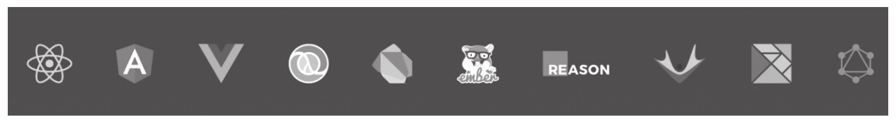
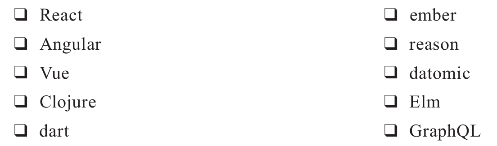

React和RxJS一样，实践的都是响应式编程（Reactive Programming）的概念，这一点从它们的名字中的R字母就可以看得出来，在Reactive Conf [1] 大会上，React和RxJS最新的发展状况也总是热门话题。
不过，在响应式编程的大旗下，还有很多其他的框架或者工具库，在Reactive Conf官方网站上列出了一大堆框架的Logo，如图13-1所示。不知道读者是否可以认出图中所有Logo代表的框架名，如果可以的话，那你实在太厉害了。

图13-1 众多响应式框架
图中从左到右，每个Logo代表的框架或者工具依次是：

实际上，JavaScript世界里的框架和工具层出不穷，每隔几天就会有一个JavaScript框架诞生，单单从数量上看，说上面这些Logo所代表的只是沧海一粟也不算过份，这个现状真让人感觉审美疲劳。
虽然每一种框架都有可取之处，而且每一种框架都可以和RxJS配合，但是在本书中我们将只选择React（还有下一章的Redux）来结合RxJS讲解，为什么呢？
首先，样样都精通等于样样都稀松。什么框架和工具都深入学习是不现实的，如果你把知识面扩大到九百六十万平方公里，那估计知识的厚度可能还不够一厘米，这是毫无意义的，还不如深入了解一方面知识。要知道，世界上大部分知识都是相通的，计算机软件的世界更是这样，如果你能够深入理解一种框架和RxJS如何配合使用，那么，当有实际需要把RxJS应用到其他框架的时候，你就可以触类旁通。
其次，不是所有的响应式框架都和用户界面直接相关。比如GraphQL，这个框架更多的是关于如何组织和获取数据，GrapQL和RxJS组队的话依然不能构建一个完整的网页应用，需要第三个擅长用户界面处理的队友才能完成任务。
然后，不是所有的响应式框架都实践函数式编程的思想。还记得吗，在第1章中我们就介绍过，RxJS中重要的概念就是“函数响应式编程”，不光要有响应式，而且要有函数式，很多框架依然属于面向对象编程的范畴，这些框架和RxJS配合就会有很多问题。实际上，React虽然提倡函数式编程，但自身也带一点面向对象的痕迹，在后面的部分我们会详细介绍。
最后，也是最重要的一个原因，React是一个很中立的框架。实际上，和RxJS关系最紧密的响应式框架是Angular，Angular完全依赖于RxJS，和RxJS的源代码一样，Angular的框架也使用TypeScript语言而不是原生的JavaScript，但是Angular是一个不中立的框架。所谓“不中立”，指的是如果我们使用Angular，那么整个应用的结构就必须按照Angular的规矩来行事。我并不是说这样不好，很多时候有规矩总比没有规矩要好，但是，这是一本介绍RxJS的书，RxJS本身是一个很中立的工具，换句话说，我们可以用各种方法来使用RxJS，而不是局限于一种选择。所以，最好通过和相同理念的框架配合来展示RxJS的威力。
React是很中立的框架，它主要负责的是界面展示，并没有要求开发者必须要使用Flux或者Redux或者MobX来管理数据，当然，RxJS也只是一种选择。
React是Facebook贡献的开源用户界面框架，在业界具有很高的知名度，绝对值得花时间去学习，我有另一本书《深入浅出React和Redux》详细介绍了React和Redux的使用方法，不过如果你对React并没有什么了解也不用担心，接下来会做一个简单介绍；如果你对React已经非常了解，可以跳过下面一节。
[1] Reactive Conf会议：https://reactiveconf.com/。